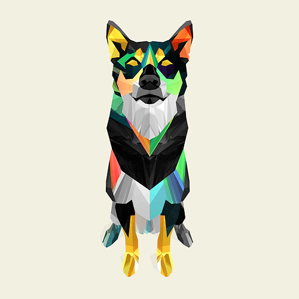
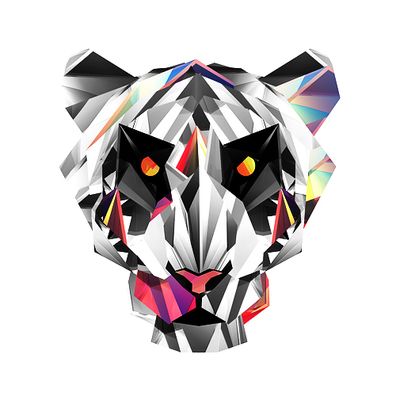
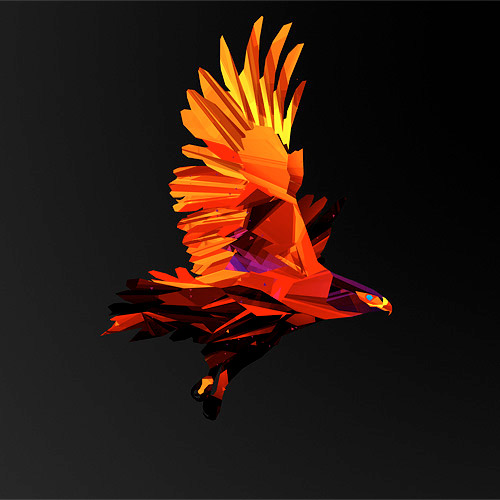
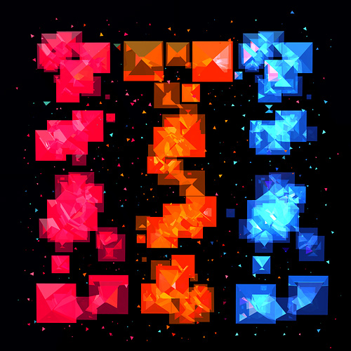
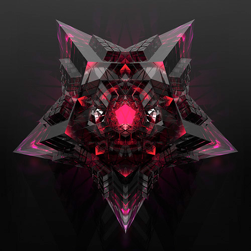
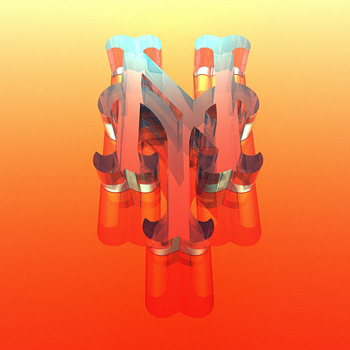
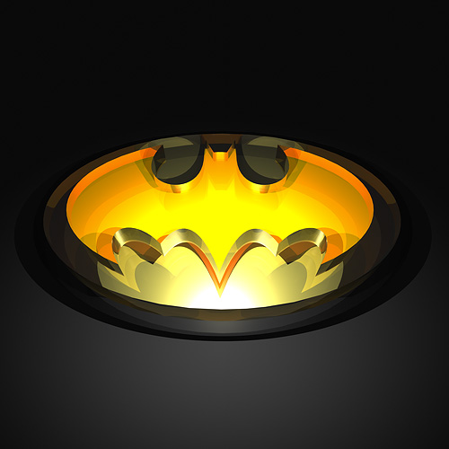
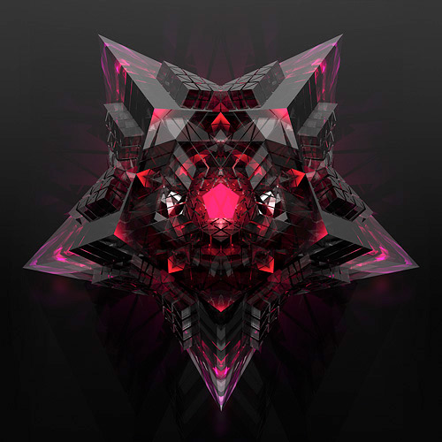
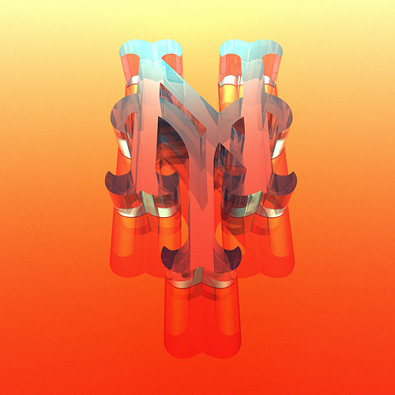
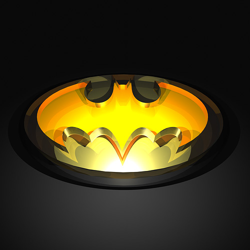

Justin Maller
Justin Maller is an Australian freelance illustrator and art director based in Brooklyn, NY. He has been creating digital art for over fifteen years, and has been a full time freelance artist for the last eight.
Justin has had the pleasure of producing illustrations and concept art for a diverse array of companies and publications worldwide, and enjoys a collaborative relationship with many brands, agencies and studios. He is also the Creative Director of The Depthcore Collective, an international modern art collective he established in June 2002. Justin recently completed a 365 day challenge producing a piece of art daily for his year long Facets project. Work aside, he enjoys hurting himself playing basketball, being bossed around by his Shiba Inu overlord and rambling incoherently on twitter.




 





|
||||
Here we can browse some of Justin's work during his Facets project. He's done work anywhere from animals, to abstract art, to iconic logos.
CLIENT LIST
ILLUSTRATION & CAMPAIGN
NIKE | VERIZON | AMERICAN EXPRESS | GATORADE | DIRECTV | HP | DOLBY | LG | GRAMMYS | NBA | COCA-COLA | HARPER COLLINS | UNDER ARMOUR | JORDAN APPAREL | DC SHOE CO. | UNIVERSAL SONY PICTURES | SMIRNOFF | MARTINI | OWSLA | ESPN
You can buy prints of his work at facets.la and helmeti.ca or apparel at shop.facets.la.